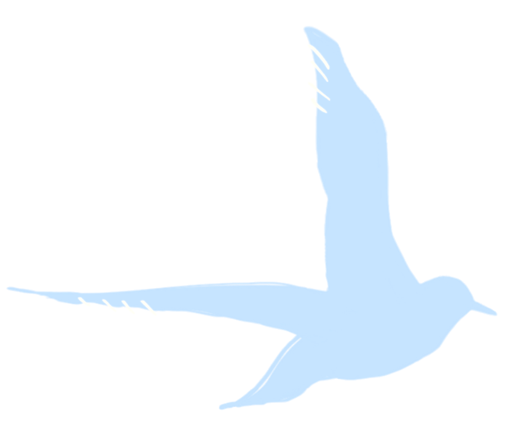
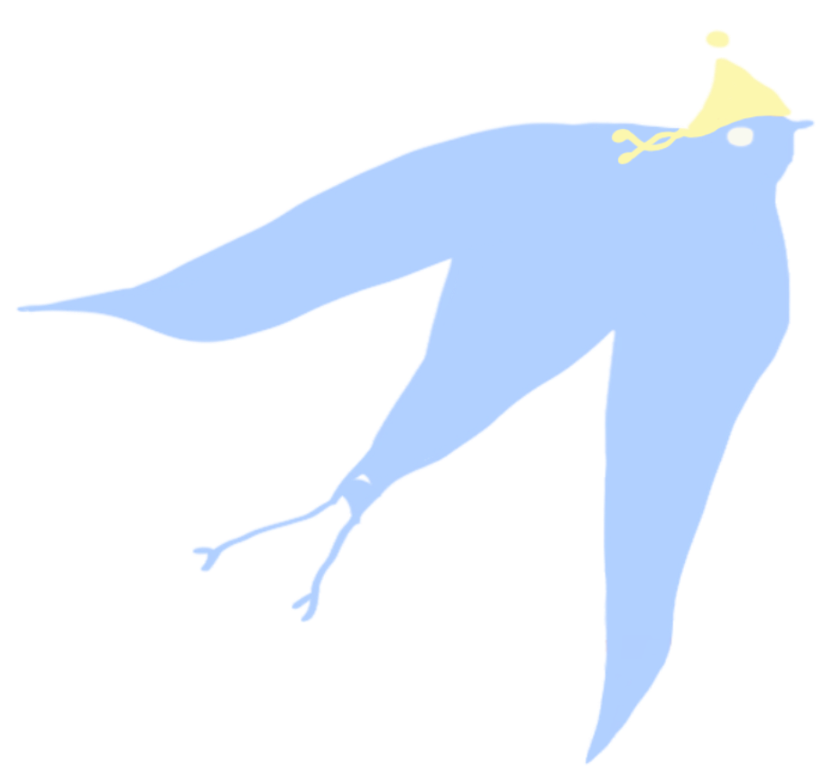
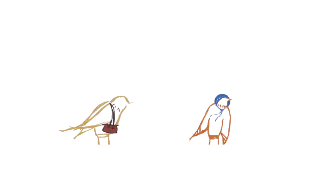

Computational Social Scientist
Understanding health inequalities with AI
I specialise in the study of health disparities leveraging machine learning, deep learning, and explainable AI. My research focuses on social determinants of health and their influence on mortality and morbidity outcomes. Currently a DPhil student at Oxford, supervised by Prof. Charles Rahal and Prof. Ridhi Kashyap.
Research Interests: Explainable AI · Health Inequalities · Social Determinants · Computational Demography · Model Evaluation
Oxford, UK
jiani.yan@wolfson.ox.ac.uk
Featured work in computational social science and health inequalities
Examining how social factors influence health outcomes using explainable AI and machine learning approaches.
Exploring unknowable limits to prediction in computational social science published in Nature Computational Science.
Advanced clustering and IRT approaches to model chronic disease profiles and multimorbidity trajectories.
Monitoring diversity in genome-wide association studies and improving representation in genetic research.
Peer-reviewed publications and scientific software

